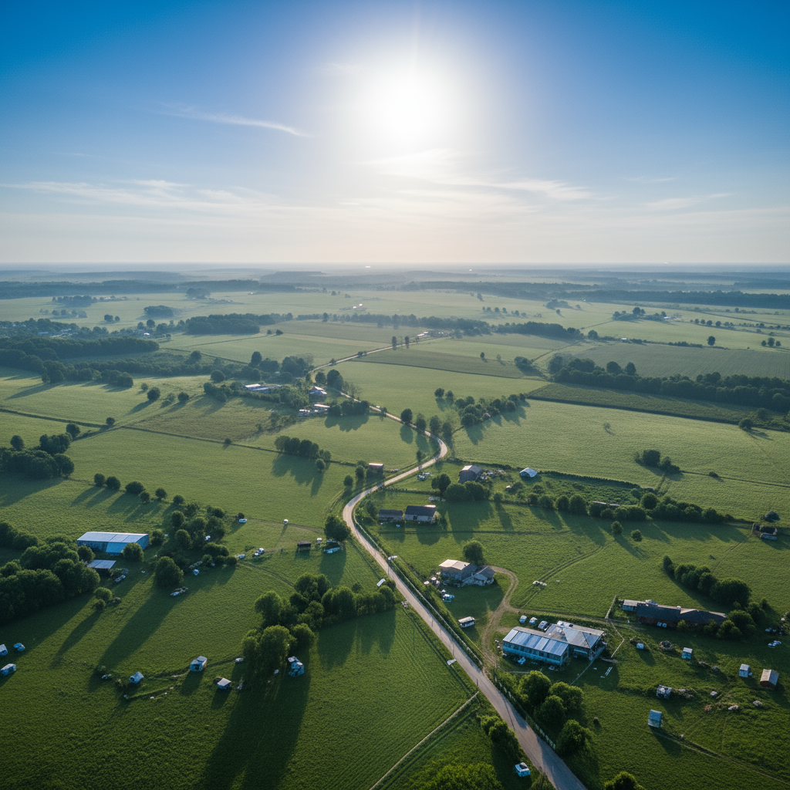
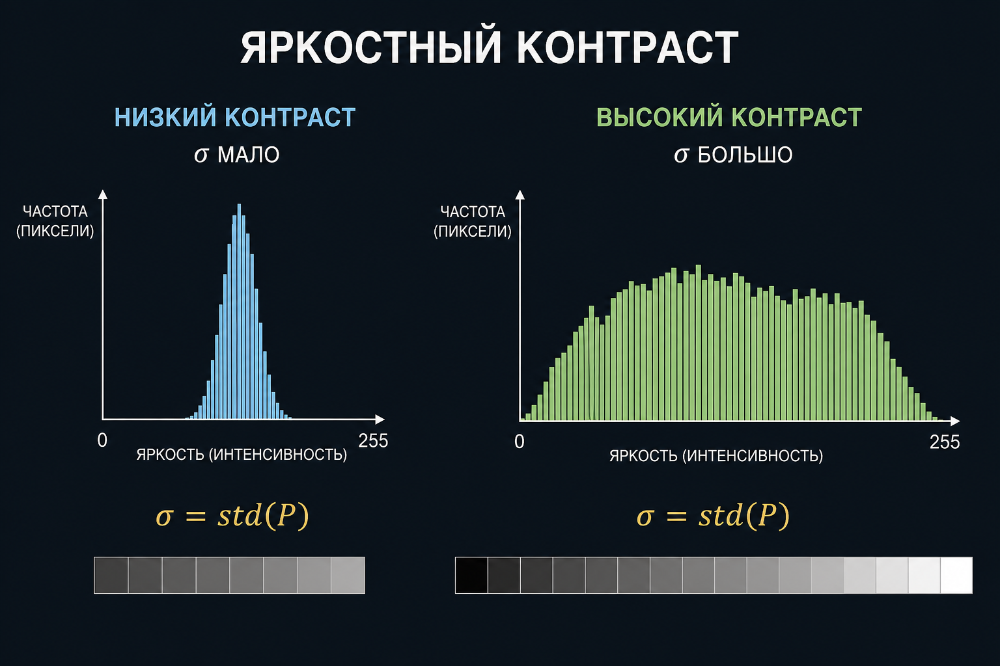
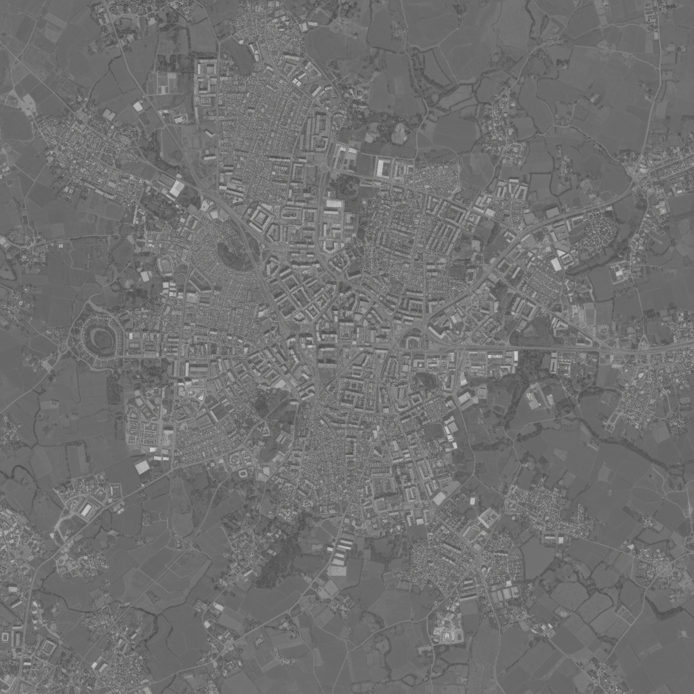
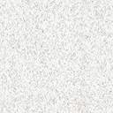
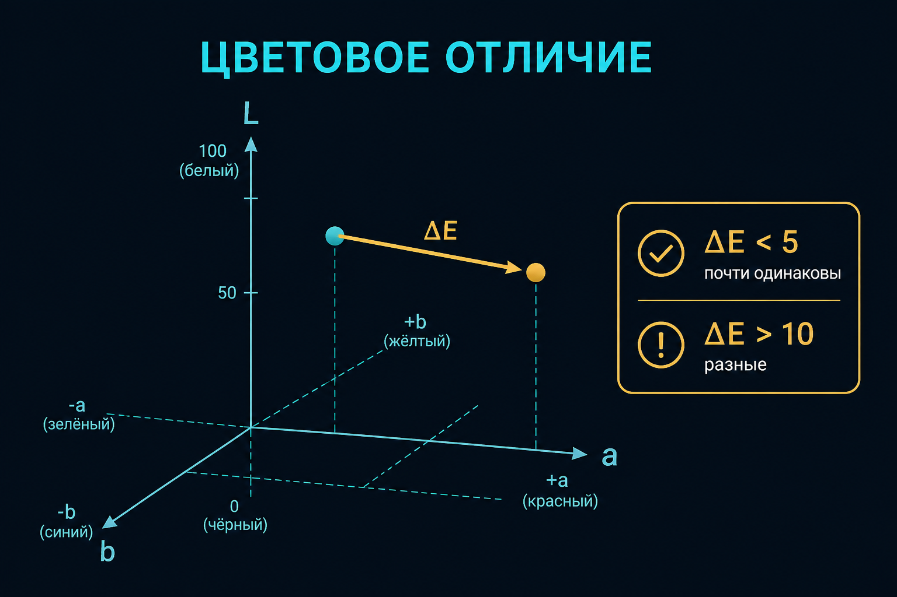

Контраст и ФПМ
А05 · σ · ΔE · передача модуляции
На пару
- Контраст — измеримая величина, не фильтр
- σ гистограммы vs Вебер объекта к фону
- ΔE в Lab: яркость одинаковая, цвет разный
- ФПМ: мелкое уже не отличить, даже если гистограмма широкая
Контраст
Разница между тёмным и светлым (яркостный) и между цветами (цветовой). Низкий: гистограмма узкая, границы слиплись, классификатор и коррелятор слепнут. Высокий: объекты отделяются. Для алгоритма это разрешающая способность по яркости и цвету, не «вау-фильтр».


Яркостный контраст — σ

σ = √[ Σ (Pi − μ)² / N ]стандартное отклонение яркостей; в Python: numpy.std(image)
Узкий столбик гистограммы → σ мало → растягивать осторожно: шум тоже растянется. Цветной снимок — три σ: σR, σG, σB.
Контраст Вебера
k = (Bs − Bb) / BbBs — яркость предмета, Bb — фона; это не σ всего кадра
Вебер отвечает на вопрос «объект на этом фоне виден?». σ отвечает «кадр вялый в целом?». Дымка сажает k, даже если сцена контрастная на земле.



Цветовое отличие ΔE
Расстояние между двумя цветами в CIE L*a*b* (L — светлота, a — зелёный–красный, b — синий–жёлтый). Ориентир: ΔE < 5 — для алгоритма почти одно; ΔE > 10 — разные. Глаз замечает порядка единиц. Формулы ΔE76 и ΔE00 различаются — в задаче смотрите, какую дали.
ΔE — схема

Где смотрят ΔE
- классы при похожей яркости (крыша vs асфальт одного L)
- контроль паншарпенинга и атмосферной коррекции: среднее ΔE «до / после»
- границы там, где ΔE между соседями скачет, а не только градиент L
Функция передачи модуляции (ФПМ)
Как система (атмосфера + оптика + смаз + детектор) передаёт контраст в зависимости от пространственной частоты. На нулевой частоте ≈ 1, к мелким деталям падает. Частотно-контрастная характеристика изображения — родственник. В А06 линейный элемент разрешения: порог ~5–10% контраста, не грубее 1,25 px по ГОСТ Р 59328.
σ не заменяет ФПМ
σ говорит: снимок вялый в целом. ФПМ говорит: мелкое уже не отличить, даже если гистограмма широкая. Растянуть контраст в графическом редакторе ФПМ объектива и атмосферы не вылечит.
Вопросы
- Почему низкий контраст убивает не только «красоту», но и орто?
- Что меряет σ? Чем Вебер отличается?
- Зачем ΔE, если уже есть три канала?
- Чем ФПМ отличается от «контраста гистограммы»?